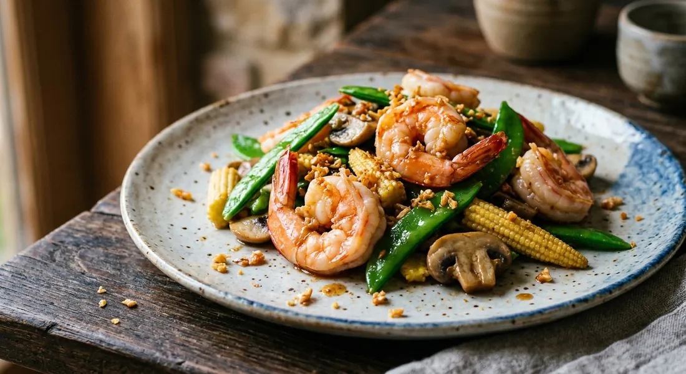

Thai garlic prawn stir-fry — king prawns flash-fried with crushed garlic and the 'three friends': baby corn, mangetout and mushrooms, in a light soy and oyster seasoning, finished with crispy fried garlic.

กุ้งผัดสามสหาย
Goong pad saam sahai is the Thai restaurant's answer to the quick prawn stir-fry: king prawns flash-fried with crushed garlic, tossed with the "three friends" — baby corn, mangetout and mushrooms in the classic combination — in a light soy and oyster seasoning, and finished with a snowfall of crispy fried garlic.
It is a wok dish built on order of operations. Nothing in it cooks for long; the skill is in the sequence.
| Thai | English | Amount |
|---|---|---|
| กุ้งสด | King prawns, peeled, butterflied, tails on | 9-12 |
| Thai | English | Amount |
|---|---|---|
| ข้าวโพดอ่อน | Baby corn, halved lengthways | 8-10 |
| ถั่วลันเตา | Mangetout or snow peas, stringed | 100g |
| เห็ด | Mushrooms, sliced | 80g |
| Thai | English | Amount |
|---|---|---|
| กระเทียมสับ | Garlic, crushed, half fried crisp, half stir-fried | 20g |
| ซีอิ๊วขาว | Light soy sauce | 1-2 tbsp |
| น้ำมันหอย | Oyster sauce | 1-2 tbsp |
| น้ำตาลทราย | Sugar | 1-2 tsp |
| พริกไทยป่น | White pepper | a sprinkle |
| น้ำมันพืช | Vegetable oil | 2 tbsp |
The name is a formula, not a fixed list. Thai sources use "สามสหาย" for whatever three ingredients the cook happens to pair: the classic prawn version pairs baby corn, snow peas and mushrooms; a health-conscious version reads it as three mushrooms — eryngii, shimeji and enoki; a pungent southern variant builds it from sator beans and cha-om with glass noodles, seasoned with pickled garlic brine. Even a plain vegetable stir-fry of choy sum, cabbage and meatballs sails under the same name.
The restaurant standard is the vegetable trio. Baby corn for sweetness and crunch, mangetout for that thin green snap, mushrooms for body. The menu version this page follows matches Thai Aroy Dee's own description: king prawns, baby corn, mangetout, mushrooms, crushed garlic, soy.
Crisp the garlic first. Half the crushed garlic is fried in the oil until golden and crisp, then lifted out and reserved. It returns at the end, on top, where it keeps its crunch instead of burning in the wok. The rest is stir-fried as the flavour base.
Order the wok by cooking time. Baby corn goes in first — it takes the longest. The prawns join next and are tossed only until they turn pink. The mangetout and mushrooms go in last with a splash of water, so they steam-cook to just-tender and carry the seasoning.
String the peas. The one step home cooks skip: pulling the side fibres from the mangetout. Old pods string easily, and a stringy bite ruins the dish's clean, quick finish.
The sauce is short — light soy, oyster sauce, a little sugar, white pepper. It should coat, not pool. Some cooks season with seasoning sauce and fried-garlic oil as the base; the balance is savoury with a faint sweetness, sharpened by the pepper.
Straight from the wok to the plate, with jasmine rice. The vegetables should still have bite, the prawns should still be springy, and the crispy garlic should still crunch.
This recipe is translated from the following Thai-language sources. Where they disagree, we've said so.
1. Wongnai — กุ้งผัดถั่วลันเตาข้าวโพดอ่อน — https://www.wongnai.com/recipes/ugc/1036a76f48aa400f9083d9aa84e33d3d
2. Cook n Bake Journal — กุ้งผัดถั่วลันเตา — http://cooknbakejournal.blogspot.com/2012/02/blog-post_06.html
3. Cookpad — กุ้งผัดสามเห็ด — https://cookpad.com/th/recipes/12527032
4. Wongnai — ผัดสามเหม็น (กุ้ง วุ้นเส้น ชะอม สะตอ) — https://www.wongnai.com/recipes/ugc/ad417a6488704decbc8359c7bfc59d31
5. Wongnai — ผัดสามสหาย — https://www.wongnai.com/recipes/ugc/1f2f105938ba46e6b5b03315c11300d2